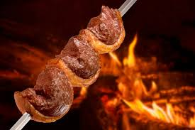

Churrasco
Imagem: Wikimedia Commons
Prato tradicional do Rio Grande do Sul, consiste em carne assada na brasa, geralmente servida em grandes festas.
Imagem: Wikimedia Commons
Prato tradicional do Rio Grande do Sul, consiste em carne assada na brasa, geralmente servida em grandes festas.
Imagem: Wikimedia Commons
Prato típico do Paraná, feito com carne bovina cozida por horas em panela de barro, servido com farinha de mandioca e banana.
Imagem: Wikimedia Commons
Bolo de origem alemã, muito comum no sul do Brasil, feito com frutas (geralmente banana) e uma farofa doce por cima.